Sobre Nosotros
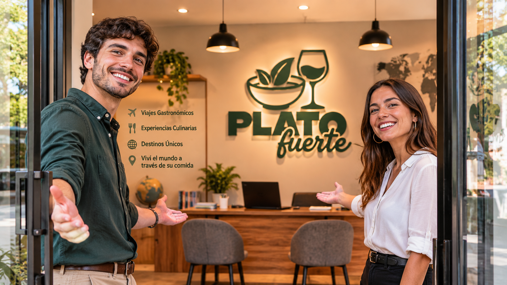
No viajamos solamente para concer lugares. Viajamos para descubrir sabores
En PLATO fuerte creemos que cada destino tiene una historia para contar, y muchas veces esa historia comienza alrededor de una mesa.
Somos una agencia de viajes especializada en experiencias gastronómicas, creada por amantes de los viajes, la buena comida y las culturas del mundo. Nuestro objetivo es conectar personas con destinos únicos a través de sus sabores, tradiciones y costumbres, ofreciendo mucho más que unas simples vacaciones.
Nos apasiona descubrir esos rincones donde la gastronomía es parte de la identidad de su gente: desde una auténtica pizza italiana en las calles de Nápoles, pasando por los aromas de las tradicionales parrillas argentinas, hasta los mercados, restaurantes y recetas familiares que hacen especial a cada rincón del planeta.
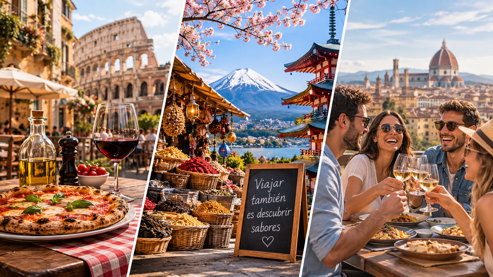
Nuestra Filosofía
Creemos que la mejor manera de conocer una cultura es vivirla. Y pocas experiencias son tan auténticas como compartir su comida, conversar con sus habitantes y descubrir los secretos detrás de cada plato.
Por eso diseñamos propuestas que combinan turismo, gastronomía y experiencias culturales. Buscamos que cada viaje tenga su propia esencia, con recorridos cuidadosamente pensados para que nuestros viajeros puedan disfrutar, aprender, explorar y, sobre todo, crear recuerdos inolvidables.
¿Que nos hace diferentes?
No ofrecemos solamente destinos: ofrecemos experiencias.
Nos ocupamos de seleccionar lugares, sabores y actividades que permitan conocer cada destino desde una perspectiva diferente. Queremos que nuestros viajeros visiten lugares increíbles, prueben platos tradicionales, descubran nuevos ingredientes y se lleven algo más que fotografías: historias y momentos que permanezcan en su memoria.
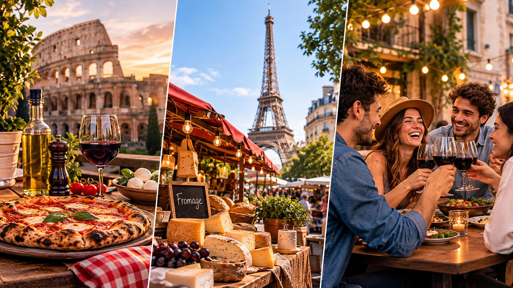
Nuestra invitación
En PLATO fuerte queremos que te animes a descubrir el mundo de una manera diferente.
Prepará las valijas, abrí el apetito y dejate sorprender. Porque hay viajes que se recuerdan por sus paisajes, otros por sus aventuras… pero los mejores también se recuerdan por sus sabores.
PLATO fuerte — El mundo tiene mucho para ofrecer. Nosotros te invitamos a probarlo.
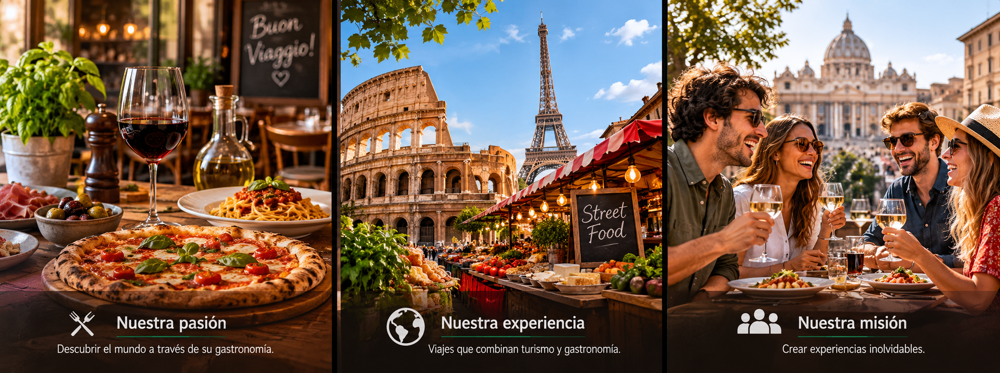

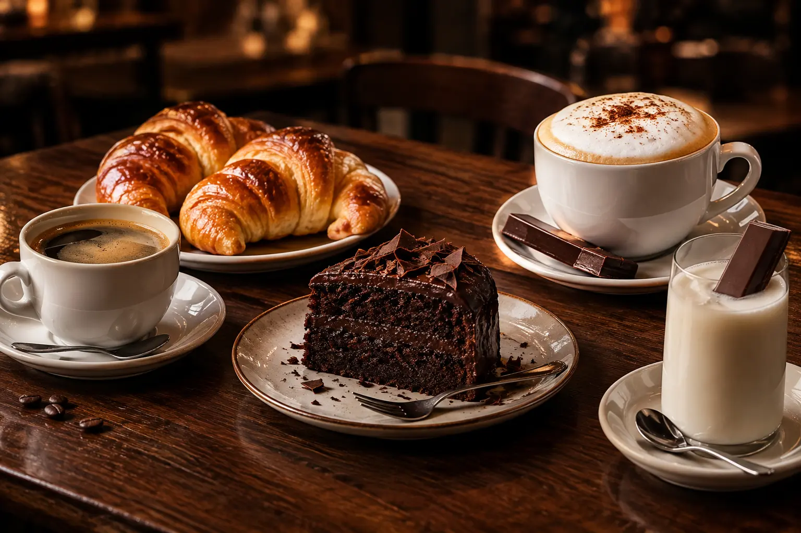
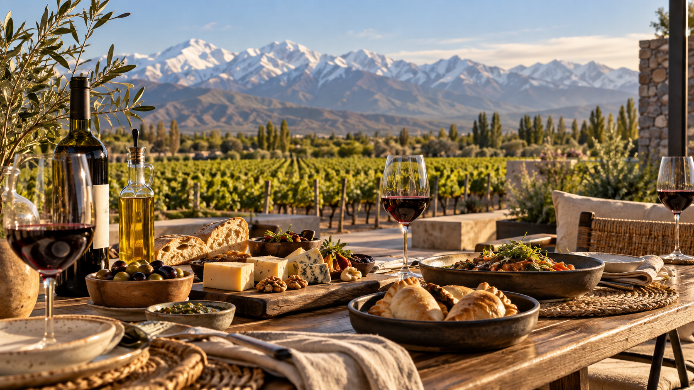
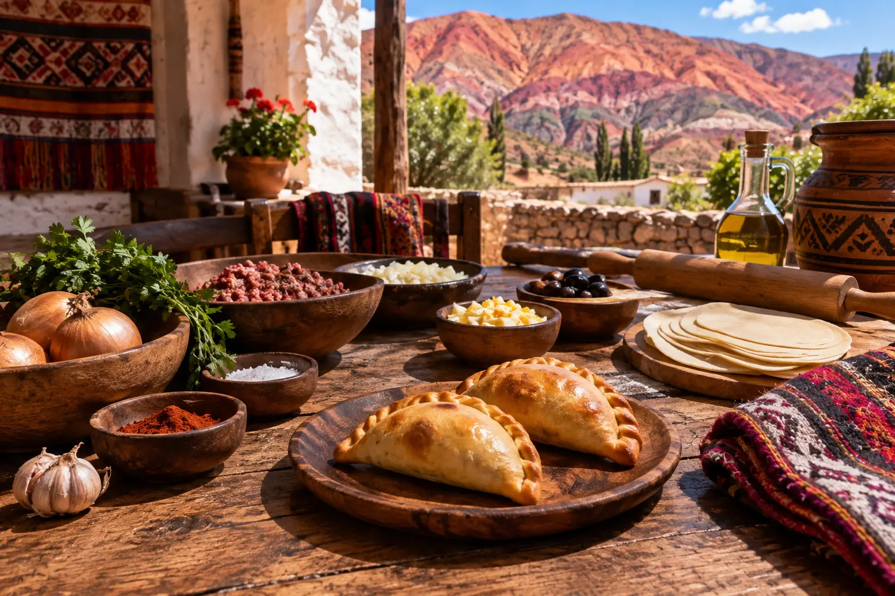
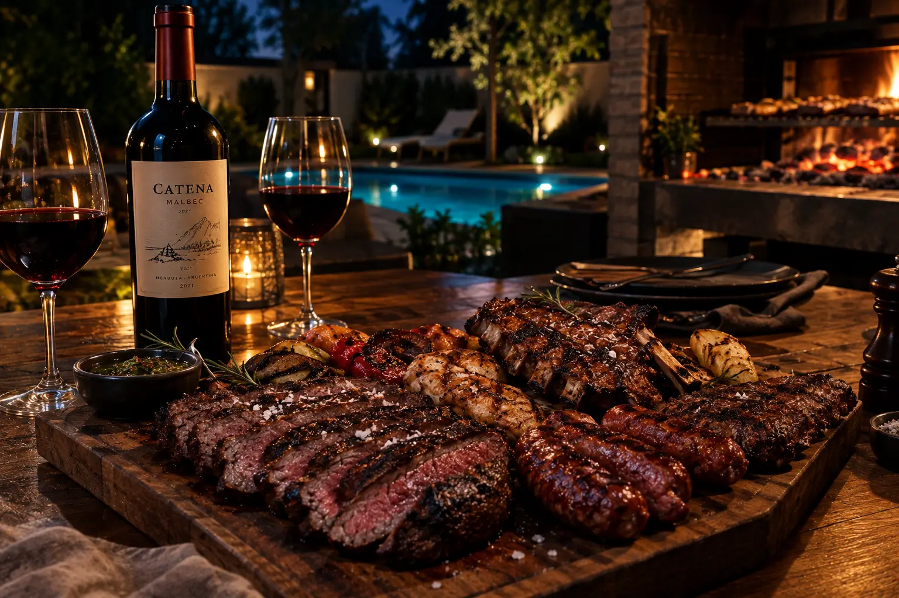
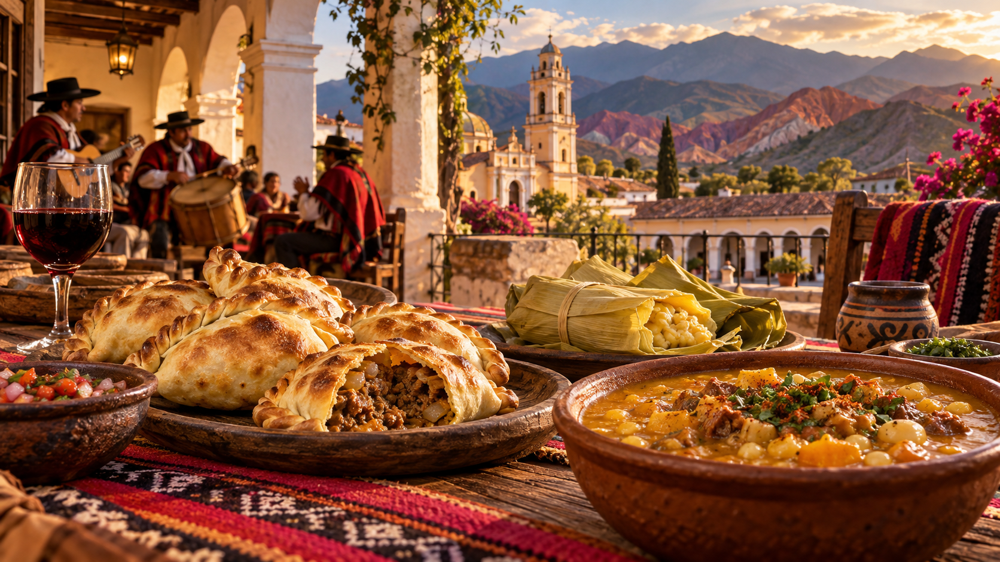
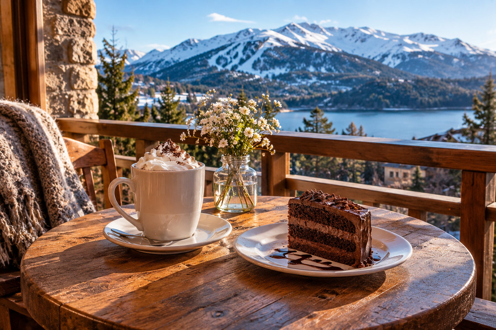
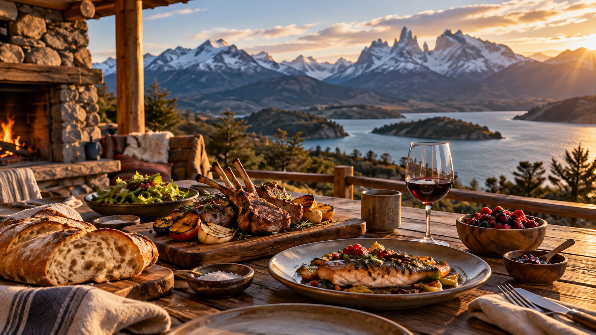